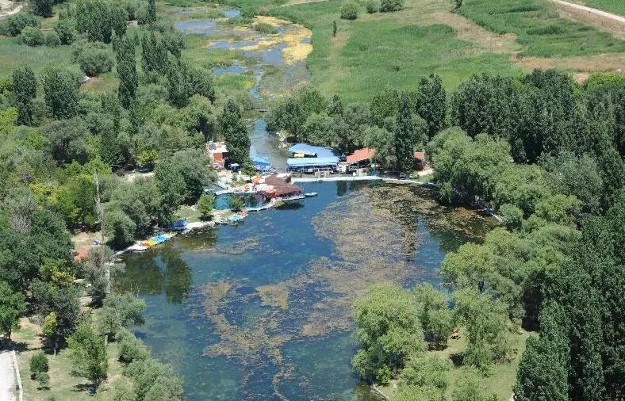
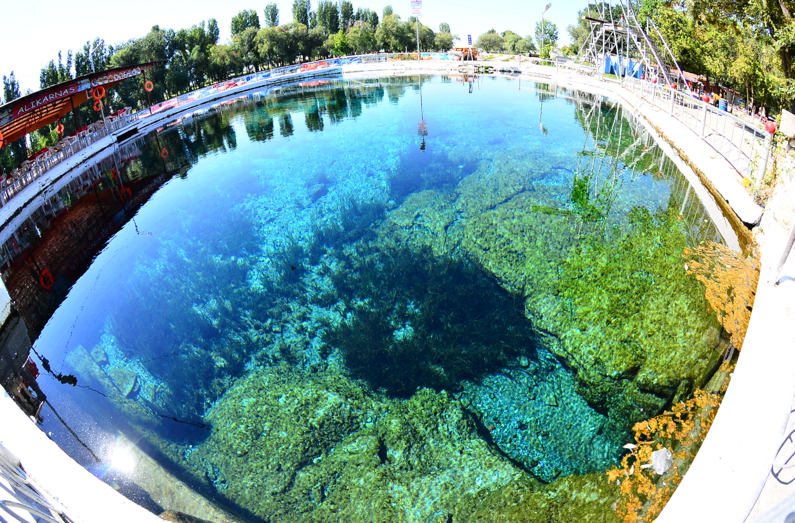

Çifteler
Sultan Mahmut adına 1815 civarında kurulan Çiftlikât-ı Hümayun veya Mahmudiye Çiftliği'nin ilk merkezidir.
Daha sonra yönetim merkezi şimdiki Mahmudiye ilçesine taşındı.
Cumhuriyet döneminde Çifteler Köyü olarak bilinen ilçe, 1954 yılında çıkarılan 28 Haziran 1954 tarih ve 6821 sayılı kanunla Çifteler ilçe merkezi olmuştur.
Yüzölçümü 820 km2 dir. Ortalama rakımı 875 m'dir.
Yazları kurak ve sıcak, kışları soğuk ve kurak, ilkbahar ve sonbahar serin ve yağışlı geçer.
İlçede 61.850 hektar tarım arazisinin 14.000 hektarında sulu tarım, 47.580 hektarında kuru tarım yapılmaktadır.
1755 hektarı ormanlıktır.


Günyüzü İlçesi Hakkında Bilgi Almak İçin Tıklayınız.
Anasayfaya Dönmek için Tıklayınız.